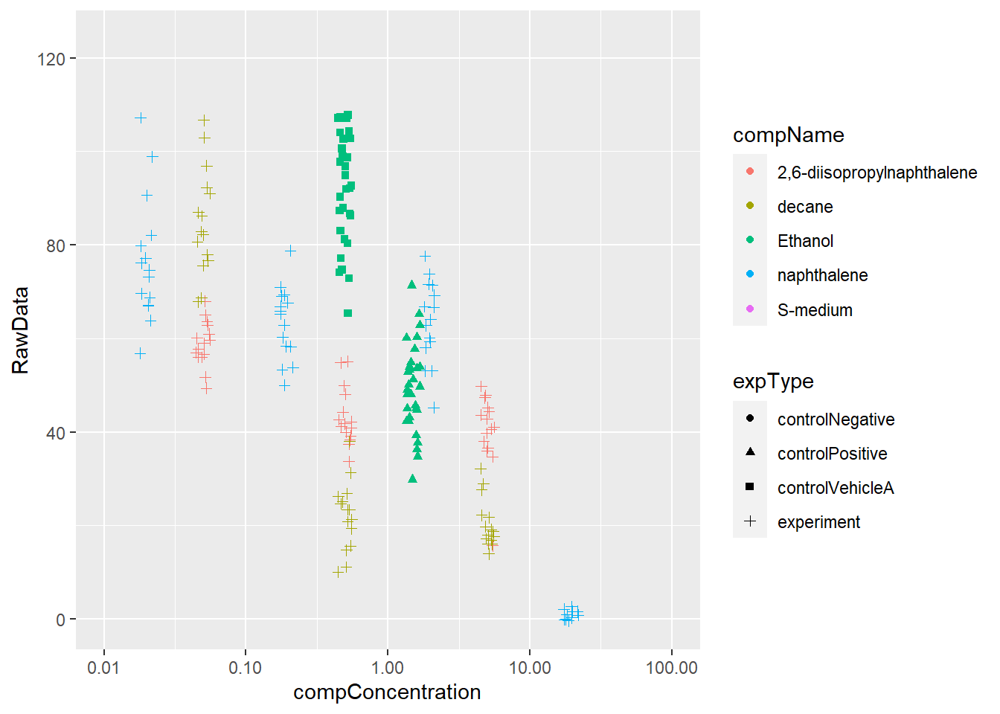
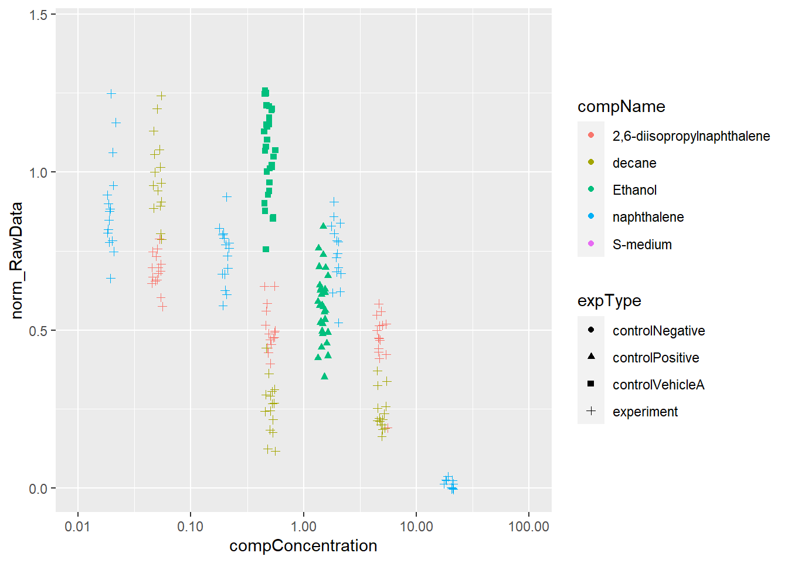

6 Dosis response analyse
Hieronder wordt een dosis respons analyse uitgevoerd. Tijdens het kijken naar de data voor deze analyse valt op dat er wat datapunten missen in rij 192-196 en dat sommige kolommen volledig dezelfde data bevatten wat beter in een metadata bestand gezet had kunnen worden.
Een stappenplan voor deze analyse is: 1. de ruwe data inlezen, 2. de data verkennen om te kijken of de data correct is ingelezen, 3. als er data verkeerd is deze aanpassen/ anders in laten lezen totdat deze wel correct is voor de analyse, 4. normaliseer de data met behulp van de negatieve controle, 5. visualiseer de data met behulp van ggplot, 6. trek conclusies aan de hand van de verkregen visualisatie.
Als eerste wordt de data ingeladen in R.
# inladen data
data <- read_excel(here(
"assignment_1",
"raw_data",
"CE.LIQ.FLOW.062_Tidydata.xlsx"
))Hierna wordt van de ongefilterde data een scatterplot gemaakt om de data te ontdekken.
# maak een scatterplot met de ongefilterde data
data %>%
ggplot(aes(x= compConcentration, y= RawData, color= compName, shape= expType)) +
geom_point() +
theme(axis.text.x = element_text(angle =45, hjust = 1))
De data van de x-as is character in plaats van numeriek omdat het als wetenschappelijke notatie is geimporteerd, Dit moet aangepast worden. Hierna kan dezelfde grafiek nog een keer gemaakt worden maar dan met een logaritmische schaal op de x-as.
# controleer de unieke waardes van de kolom compConcentration, hierin is te zien dat sommige waardes in wetenschappelijke notatie staan waardoor ze als character worden gelezen
unique(data$compConcentration)## [1] "4.99" "0.499" "4.99E-2" "4.9899999999999996E-3" "4.9899999999999999E-4" "4.99E-5" "19.5"
## [8] "1.95" "0.19500000000000001" "1.95E-2" "1.9499999999999999E-3" "1.95E-4" "0,000195" "1.5"
## [15] "0" "0.5"# verander de waardes met wetenschappelijke notatie naar normale notatie
data["compConcentration"][data["compConcentration"] == "1.95E-2"] <- "0.0195"
data["compConcentration"][data["compConcentration"] == "4.9899999999999996E-3"] <- "0.0049899999999999996"
data["compConcentration"][data["compConcentration"] == "4.9899999999999999E-4"] <- "0.00049899999999999999"
data["compConcentration"][data["compConcentration"] == "1.9499999999999999E-3"] <- "0.0019499999999999999"
data["compConcentration"][data["compConcentration"] == "4.99E-2"] <- "0.0499"
data["compConcentration"][data["compConcentration"] == "4.99E-5"] <- "0.0000499"
data["compConcentration"][data["compConcentration"] == "1.95E-4"] <- "0.000195"
# verander de global options om geen wetenschappelijke notatie in de as.numeric function te hebben
options(scipen=999)
# controleer de unieke waardes nogmaals, de kolom kan nu omgezet worden naar numeriek
unique(data$compConcentration)## [1] "4.99" "0.499" "0.0499" "0.0049899999999999996" "0.00049899999999999999" "0.0000499"
## [7] "19.5" "1.95" "0.19500000000000001" "0.0195" "0.0019499999999999999" "0.000195"
## [13] "0,000195" "1.5" "0" "0.5"data$compConcentration <- as.numeric(data$compConcentration)
# verander de kolommen "compName" en "expType" naar een factor
data$compName <- as.factor(data$compName)
data$expType <- as.factor(data$expType)
# maak een scatterplot me een beetje jitter zodat de punten niet overlappen
data %>%
ggplot(aes(x= compConcentration, y= RawData, color= compName, shape= expType)) +
geom_jitter(position = position_jitter(0.05)) +
scale_x_log10(limits=c(0.01,100))Allereerst moet deze data nog genormaliseert worden, Dit wordt gedaan door het gemiddelde van de negatieve controle naar 1 te zetten en alle andere waardes een verhouding daarvan te maken. Dit zodat er gekeken kan worden naar verhoudingen en niet naar absolute getallen.
# verkrijg het gemiddelde van de controlNegative in de kolom expType
norm <- data %>% group_by(expType) %>% summarise_at(vars(RawData), list(name=mean))
# maak een nieuwe kolom met genormaliseerde data
norm_data <- data %>% mutate(norm_RawData= RawData / as.numeric(norm[1,2]))
# maak de genormaliseerde scatterplot
norm_data %>%
ggplot(aes(x= compConcentration, y= norm_RawData, color= compName, shape= expType)) +
geom_jitter(position = position_jitter(0.05)) +
scale_x_log10(limits=c(0.01,100))
De positieve controle voor dit experiment is ethanol en de negatieve controle is S-medium. Als je naar de grafiek kijkt lijkt 2,6-diisopropylnaphtalene langzaam maar zeker af te nemen terwijl naphtalene lang hoog blijft en opeens afvalt en decane juist het omgekeerde doet en snel afvalt en daarna daar blijft hangen. Er lijkt dus wel een correlatie te zijn tussen de concentratie compound en de hoeveelheid getelde nematoden.